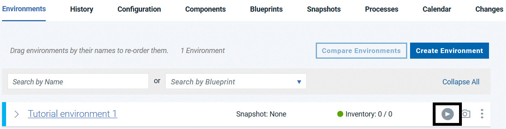
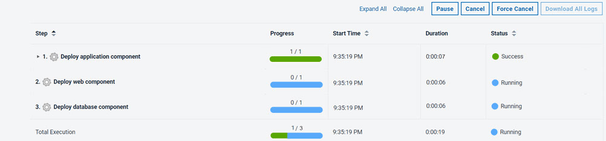
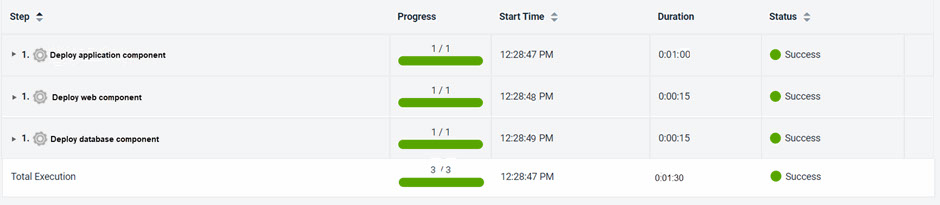
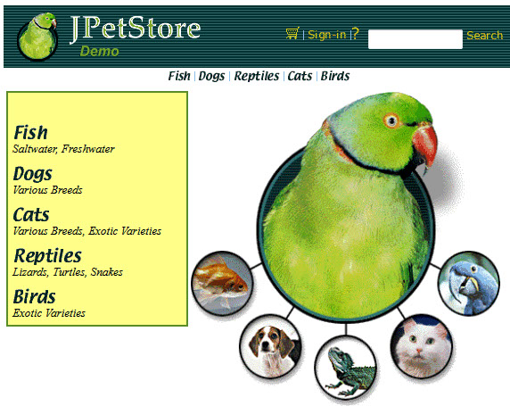
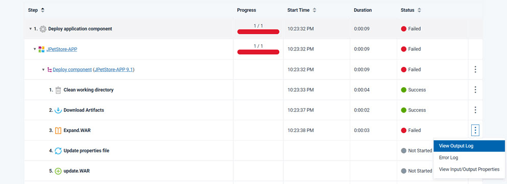

Lesson 5: Deploying the application components
To deploy the components in the application, run the application process on the new environment.
About this task
Procedure
- In the same row as your environment, click the Request
Process
 icon, as shown in the following figure.
icon, as shown in the following figure.
Results

If the process runs successfully, the request shows that each component process is finished, as in the following figure:

In this case, you can view the running application at the following URL, by substituting the host name of your target system for hostname. This is the host name of the agent that you configured in Configuring the agent and target system. In the URL, specify the tomcat.contextroot value that you entered for this environment after the port number.
http://hostname:8081/JPetStoreDev
From the home page, click Enter the Store and then browse the items that are available, as shown in the following figure:

If the application process did not run successfully, one of the component
processes might have failed. In this case, the process is listed with a status of
Click View Output Log to look at the command-line output log for each step in the process..
Failed. To troubleshoot this failed process, expand the log
section for the component, and find the step that failed:
Click View Output Log to look at the command-line output log for each step in the process..
If one of your component processes
did not complete, identify the step that did not complete. Verify that the
properties for that step are correct and that the steps are in the correct order in
the process. Then, run the application process again.
Note: If you run the
application process again, be sure to clear the Only Changed
Versions check box and select the versions of each component. If
you leave this check box selected, the server runs the component processes only
for components that have new versions.
This application process installed each of the components in the application by running their component processes.
Application processes can also uninstall or update components or run other configuration tasks for the application and its components.